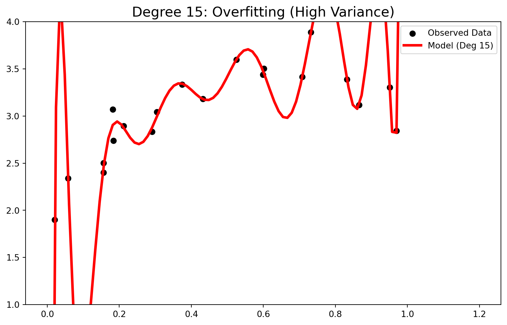
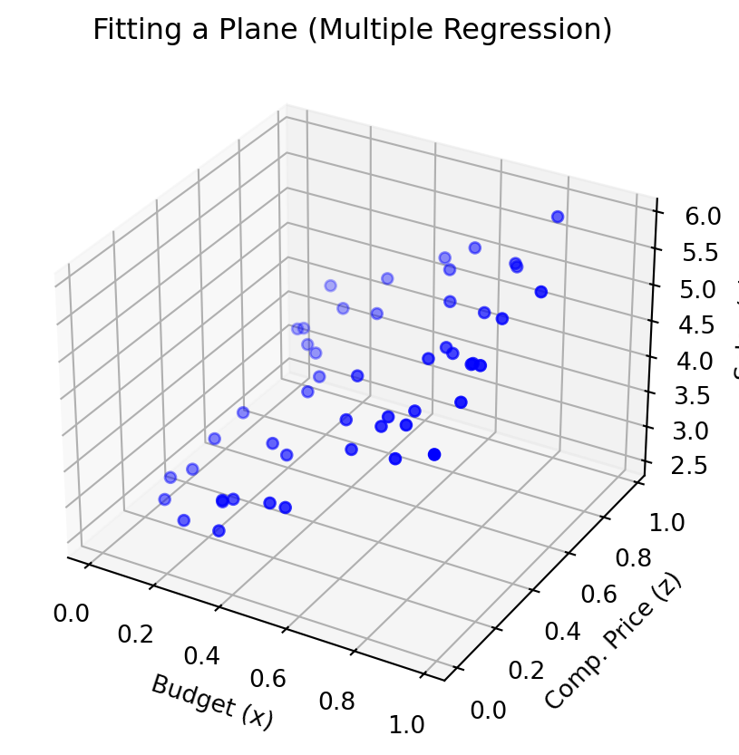
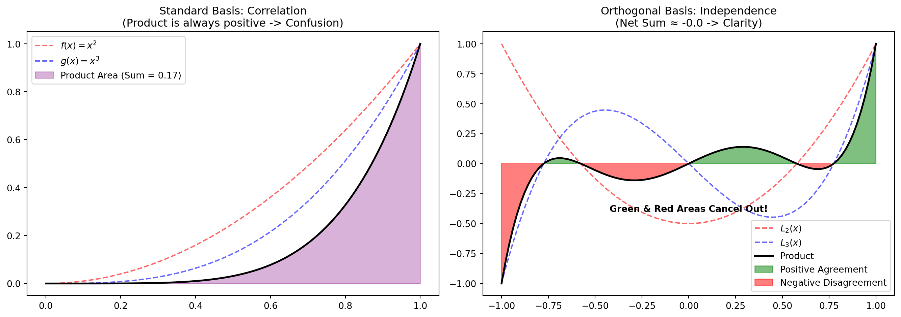
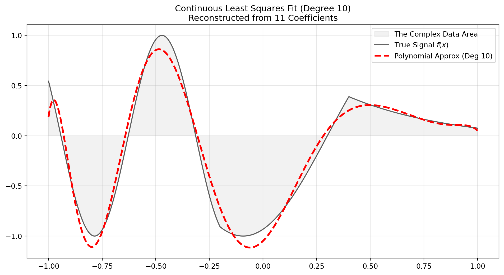

Application of Approximation Theory in Data Science
How classical mathematical concepts underpin modern machine learning?
Yahya Izadi
2025-12-30
1. What is Approximation Theory?
“We have a complex reality, and we need a simple function to represent it.”
Based on Numerical Analysis, approximation theory solves two main problems:
- Function Simplification: We have a complex explicit function (e.g., \(e^x\)), and we want to approximate it with a simpler one (like a polynomial).
- Data Fitting (Our Focus): We have a set of discrete data points (observations), and we want to find the “best” function that passes near them.
Note
In Data Science, the Data Fitting problem is the mathematical foundation of Supervised Learning.
2. The Linear Algebra Problem
Imagine we have a dataset of Marketing Budget (\(x\)) vs Sales (\(y\)). We are looking for a function \(f(x)\) such that \(f(x_i) \approx y_i\).
If we assume a linear model, we want to solve:
\[ \begin{cases} a x_1 + b = y_1 \\ a x_2 + b = y_2 \\ \vdots \\ a x_m + b = y_m \end{cases} \implies A\mathbf{x} = \mathbf{b} \]
- The Problem: We usually have more data points (\(m\)) than unknowns (overdetermined system).
- The Solution: We cannot solve \(Ax=b\) exactly. Instead, we minimize the error using Least Squares.
3. Discrete Least Squares
We seek to minimize the Euclidean norm of the residual vector \(\mathbf{r} = \mathbf{b} - A\mathbf{x}\).
\[\min_{\mathbf{x}} \| A\mathbf{x} - \mathbf{b} \|_2^2\]
This leads to the famous Normal Equations:
\[A^T A \mathbf{x} = A^T \mathbf{b}\]
Why is this important for Data Science?
This equation is the engine behind: * Linear Regression * Polynomial Regression * Many basis-expansion techniques in Machine Learning.
4. Feature Engineering & The Vandermonde Matrix
Let’s assume a Quadratic Model: \(P(x) = a_0 + a_1 x + a_2 x^2\)
Here, we are asking: 1. What is the base sales? (\(a_0\)) 2. How much does Budget affect sales? (\(a_1\)) 3. How much does Budget Squared affect sales? (\(a_2\))
The Vandermonde Matrix holds these “Features”:
\[ V = \begin{bmatrix} 1 & x_1 & x_1^2 \\ 1 & x_2 & x_2^2 \\ \vdots & \vdots & \vdots \\ 1 & x_m & x_m^2 \end{bmatrix} \]
Tip
Interpretation: If \(a_2\) is negative, it means “Diminishing Returns” (Saturation).
5. Underfitting (High Bias)
6. Optimal Fit (Just Right)

7. Overfitting (High Variance)

8. Selection of the Best Model (Loss Function)
How do we choose the degree (\(n\))? We look at the Mean Squared Error (MSE).

9. Beyond Polynomials: Multiple Regression
In real Data Science, we have multiple features. Suppose we add a new feature \(z\): Competitor’s Price.
The matrix \(A\) gets a new column (Feature \(z\)).
\[ y = a_0 + a_1 x + a_2 z \]
- \(x\): Effect of our Budget.
- \(z\): Effect of Competitor’s Price.
We solve the same normal equations (\(A^T A \dots\)). We are now fitting a Plane in 3D space, not just a line.
Visualizing Multiple Regression

Continuous Least Squares
1. The Problem: Function Simplification
In Data Science, we often deal with continuous signals (Audio, ECG, Stock Trends). Let \(f(x)\) be a complex, heavy function (or high-frequency signal). We want to approximate it with a simple polynomial \(P_n(x)\) to:
Compress Data: Store 5 coefficients instead of 10,000 points.
Speed Up Computation: Integrating a polynomial is instant; integrating raw data is slow.
2. Minimizing the Integral
Unlike Discrete Least Squares (Summation), here we minimize the Integral of Squared Error:
\[E = \| f - P_n \|_2^2 = \int_a^b (f(x) - P_n(x))^2 dx\]
We define our polynomial as a combination of basis functions \(\phi_k(x)\): \[P_n(x) = c_0\phi_0(x) + c_1\phi_1(x) + \dots + c_n\phi_n(x)\]
The goal is to find the best coefficients \(c_k\).
3. The Trap of Standard Basis (\(1, x, x^2\))
Why not just use \(1, x, x^2, x^3\)?
The Data Science Problem: Multicollinearity. Look at \(x^2\) and \(x^3\) in \([0, 1]\). They are highly correlated (both go up).
If we use them as features, the model gets confused.
Changing one coefficient drastically changes the others.
The “Information” is redundant.
4. The Solution: Orthogonality (Independence)
We need a basis where features are Independent. In math, this means their inner product is zero: \[\langle \phi_i, \phi_j \rangle = \int_a^b \phi_i(x) \phi_j(x) dx = 0 \quad (i \neq j)\]
Why does this matter in Data Science?
Decoupling: We can calculate each coefficient \(c_k\) independently.
Stability: Adding a new feature (higher degree) doesn’t change previous coefficients.
Clarity: Each feature captures a unique aspect of the signal.
5. Visual Proof: Correlation vs. Orthogonality

6. Data Science Application: Solving Multicollinearity

7. Simulation: Approximating a Complex Signal
Let’s put everything together. Suppose we have a complex, continuous signal \(f(x)\) (High-Frequency Data). We want to find the best polynomial \(P_{15}(x)\) using Continuous Least Squares.
- Target: \[f(x) = \begin{cases} \sin(10x) & x < -0.2 \\ \cos(4x + \delta) & -0.2 \le x < 0.4 \\ e^{-2x} + \epsilon & x \ge 0.4 \end{cases}\]
- Method: Calculate coefficients \(c_k\) using integration (Legendre Basis).
Simulation Result

Approximation Theory in Data Science